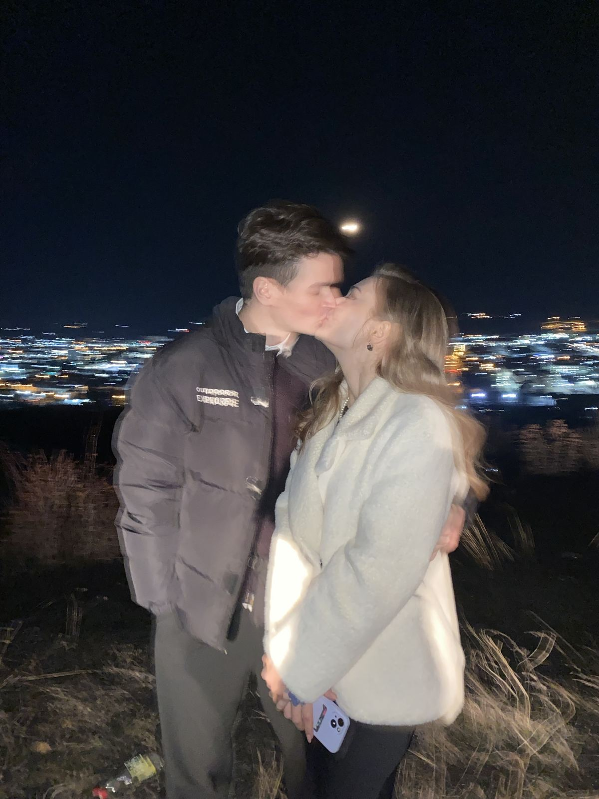
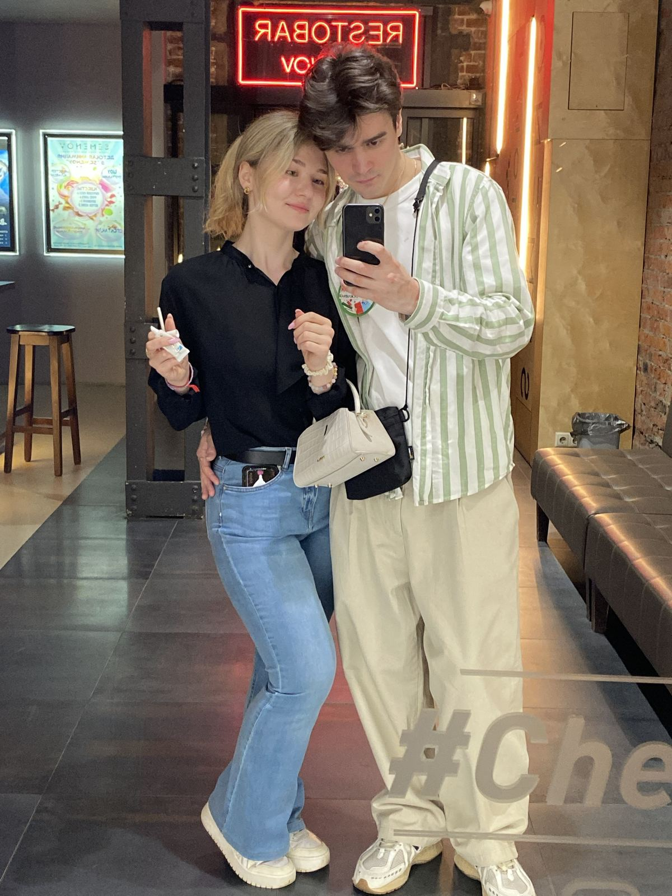
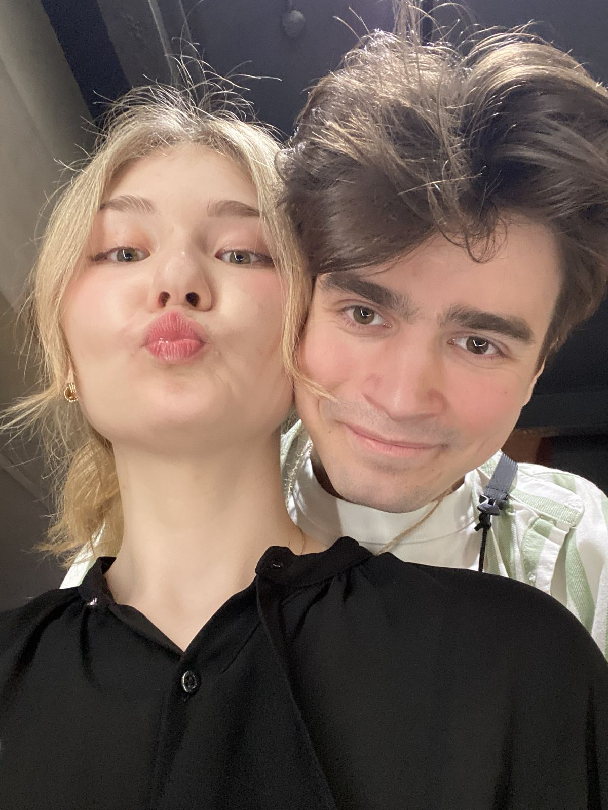
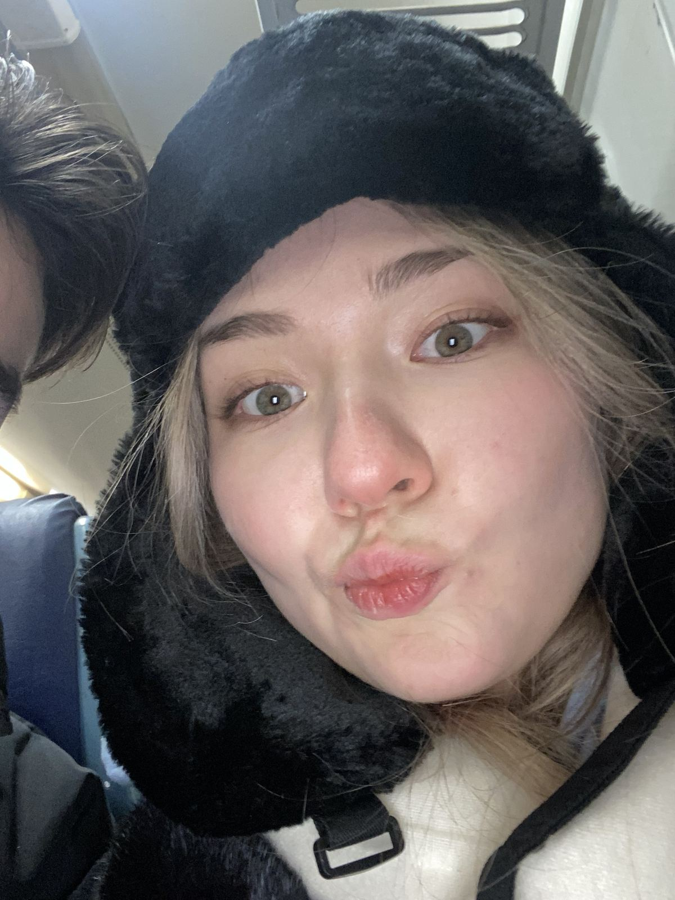
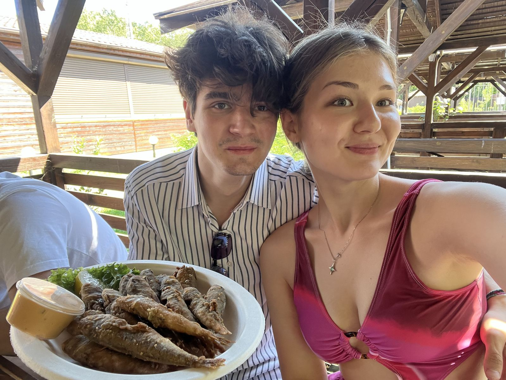

для Мау
Это не открытка и не сообщение, которое потеряется в чате.
Это то, что я хотел сказать медленно и по-настоящему.
Манюни,
Я знаю, что словами это не всегда исправить сразу. Но я хочу, чтобы ты знала: я вижу, что был неправ, и мне правда жаль, что тебе было больно из-за меня. Ты слишком дорога мне, чтобы позволять глупостям вставать между нами.
Дальше — немного нас. Тех моментов, ради которых стоит мириться, разговаривать и не сдаваться, даже когда трудно.

Тот вечер, когда весь город лежал у наших ног, а луна светила только для нас.

Обычный вечер, который запомнился именно потому, что рядом была ты.

Мне никогда не бывает так легко смеяться, как рядом с тобой.

Даже в самых нелепых кадрах ты — лучшее, что в них есть.

Хочу ещё много таких обычных летних дней — и обещаю беречь их лучше.
наша песня
«Whenever I'm alone with you, you make me feel like I am home again»
♪ послушатьи если ты дочитала до этого места —